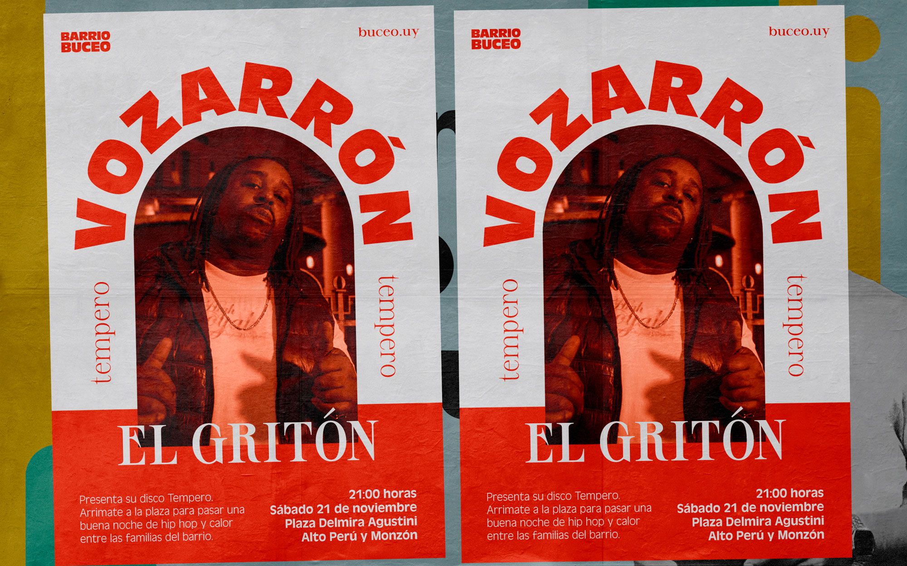
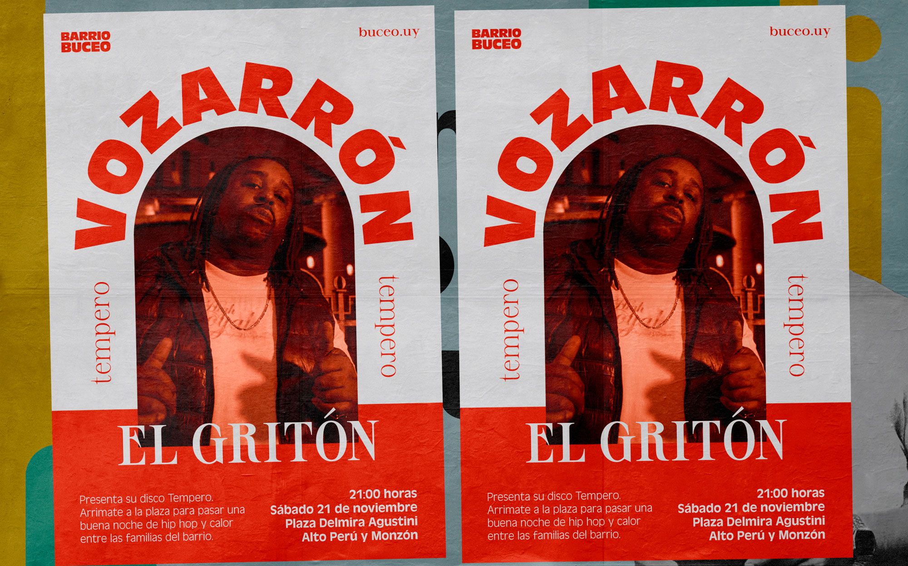
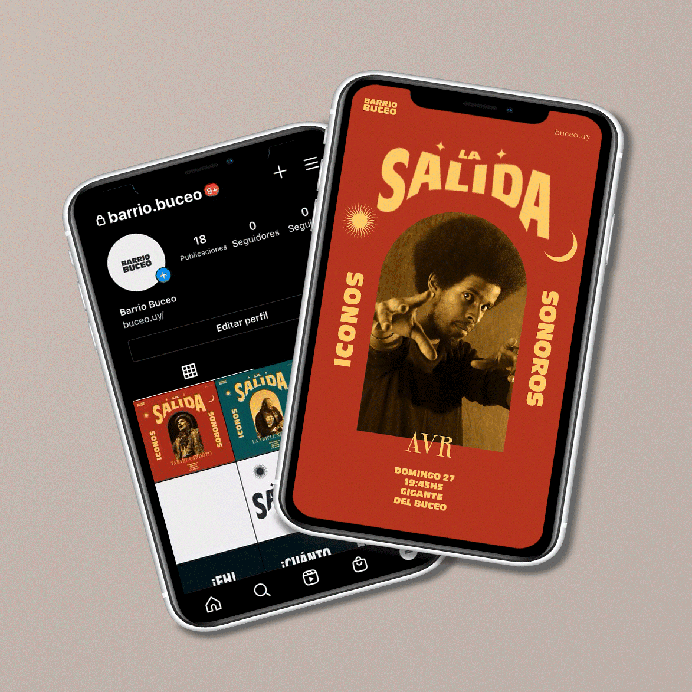
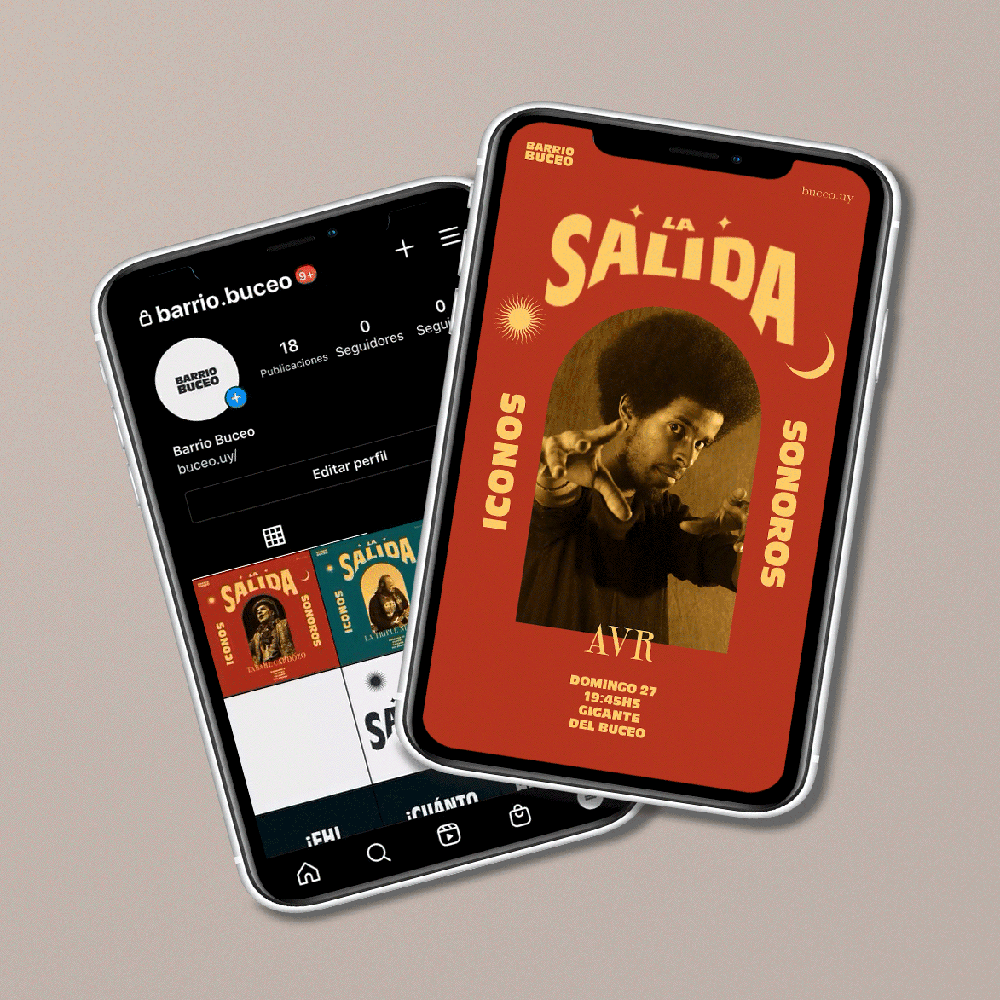
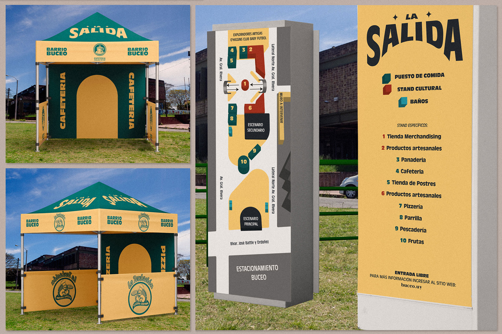
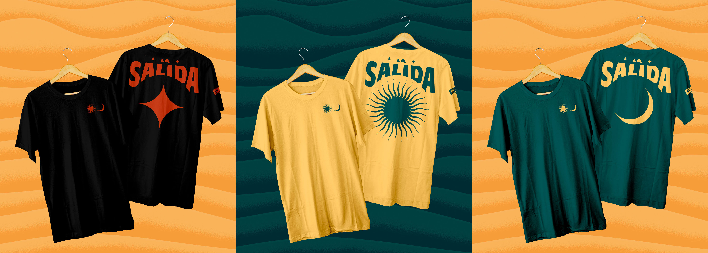
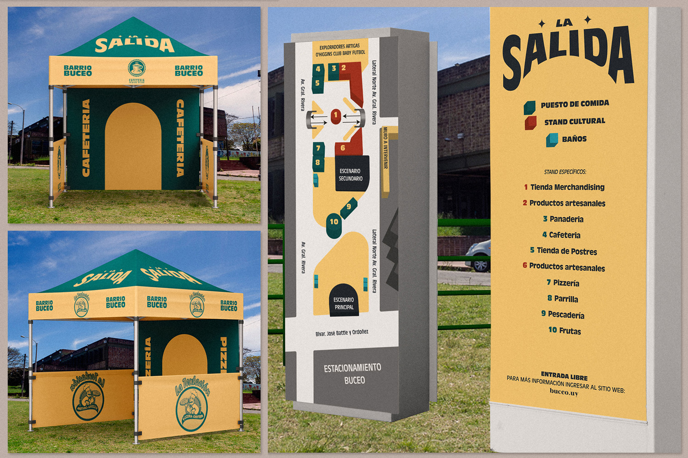
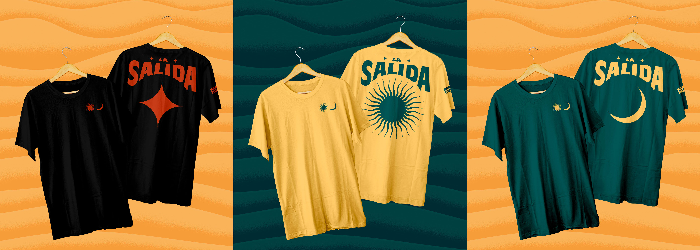

Buceo
Durante el pandémico año 2020 junto a Cristian Recoba diseñamos un sistema de identidad para el barrio Buceo de la ciudad de Montevideo, en marco del curso Taller Diseño de Comunicación 4 en la LDCV, FADU, Udelar.
Empezamos realizando una investigación que dio pie a los atributos conceptuales en los que se fundamenta todo el proyecto. A efectos de resumir el proceso y no hacer tan larga la lectura, la investigación y argumentación completa puede ser consultada en el siguiente enlace.
“¡El Buceo!... ¿Quién no conoce, de la vieja y moderna generación, ese lugar histórico, cuyo pie bañan las aguas del Plata salado, y cuyos médanos fueron testigos silenciosos del desembarco de los ingleses, (...) como de las trifulcas de la Guerra Grande, cuando los cacherulos de Garibaldi lo visitaron? Sí, el tal Buceo es más conocido que la ruda, y mucho más...”
Isidoro de María, Montevideo Antiguo tomo II, 1887.


Conceptos de comunicación
Con conceptos de comunicación nos referimos a aquellas ideas que nos interesa comunicar a través de nuestro proyecto, aquellos valores que intentamos reconocer y expresar. Todos se encuentran insertos en el partido conceptual, pero son diferenciables entre sí para encontrar nuevos espacios y extensiones comunicativas que nos permitan encontrar aquellas relaciones discursivas que nos gustaría transmitir a quien observa.

El arte al rescate del naufragio
Rescatar los valores que se encuentran en las profundidades de Buceo. Recuperar, como si de buzos se tratara, de las riquezas que han quedado en el fondo del mar. De traer a la superficie aquello que no queremos perder, antes de que el barco se hunda completamente.
La fragmentación de la estructura urbana como ese barco que se parte y se hunde. El arte y la historia, como recordatorio de lo que alguna vez fuimos, como reflejo de lo que somos, y como semilla de lo que queremos ser.
La historia forma parte del presente. Donde estás hoy, alguien estuvo antes. Por un arte al alcance de todxs. Como experiencias y acontecimientos personales.
Reflexionar los paradigmas: ¿Es la ciudad que se construye hoy la que queremos construir en el futuro? El espacio público como zona de confort. Como lugar de creación-familiar. Retomar el sentido de comunidad.
Apropiarse del espacio público como herramienta creativa para la comunidad y la memoria
Nos interesa el concepto de ‘apropiarse del espacio público’ como un elemento fundamental de acción y soberanía del vecino. De sentirse parte del territorio y de la comunidad.
‘Herramienta creativa’ como un sugerente de actividades culturales, de intercambios, estímulos, relacionamientos, encuentros, conversaciones, de construcción de conocimiento. Dar cuenta de la potencialidad creadora de la comunidad.
‘Para la comunidad y la memoria’ define el fin, la motivación, que es construir lazos comunitarios en el contexto actual sin dejar de lado la memoria, el recuerdo.

Signo identificador
El isotipo es el elemento central del sistema de identidad visual y constituye la pieza fundamental desde la cual se desprende todo el sistema de comunicación.
La forma del arco remite desde un principio al elemento constante en la arquitectura del Museo Oceanográfico. Nos apropiamos del elemento para utilizarlo como signo identitario de nuestro sistema.


 



Estrategia de comunicación
Diseñamos una estrategia de comunicación para comenzar con el funcionamiento de la marca en el territorio. Se divide en tres etapas de acción en transición, en búsqueda de la permeabilidad del sistema de identidad en la comunidad y el territorio.
Problemas
• Desintegración de la vida social en comunidad.
• Ausencia de comunicación vecinos/barrio/territorio.
• Desconocimiento del valor cultural e histórico.
Objetivos
De intervención / general: Desarrollar un espacio abierto de organización vecinal que responda ante las necesidades de comunicación, culturales y sociales del barrio.
De comunicación / específicos:
• Reflexionar sobre el habitar contemporáneo, los modos de hacer ciudad, el hábito, el consumo y la conciencia.
• Fortalecer el diálogo entre los vecinos del barrio.
• Impulsar la participación y decisión política de los habitantes sobre el territorio.
• Estimular las actividades culturales y educativas.
• Centralizar la comunicación.
Acciones
ETAPA 1: Campaña expectativa
Dar a conocer la “marca” mediante una campaña expectativa que muestre pequeña parte del sistema y mensajes "anzuelo” que inviten a ir al sitio web. Acá queremos generar curiosidad, poetizar, problematizar, cuestionar, interpelar.
De comunicación / específicos:
• Pegado de afiches en vía pública y publicidad en redes sociales. Comienzo de campaña expectativa.
• Lanzamiento de sitio web. Aterrizaje de campaña.
• Lanzamiento en redes sociales.
• Audiovisuales.


ETAPA 2: Festival barrial - LA SALIDA
Festival en el cuál queremos estimular la cultura, reconocer la historia, motivar que el arte es público y conmemorar lo que va a ser un proceso largo.
Programa del evento: Danzas, dj’s, batallas de gallos, música, tributos, ponencias, puestos de comida, feria de artesanos y actividad de modalidad stencil con la consigna “¿qué es buceo para vos?”.
• Imagen del festival, comunicación, afiches, arquigrafía, señalética, merchandising.
• Cronograma / programación / lineup / editorial.
• Animación / audiovisuales.
 



 



ETAPA 3: Difusión permanente
Es el sistema visual atendiendo aspectos cotidianos del barrio, dando consolidación e integración final a la organización.
• Sitio web de la Comunidad Buceo donde se incentiva la participación y la comunicación.
• Redes sociales.
• Revista "Mi barrio Buceo" en homenaje a la antigua revista homónima.
• Encuentros / tertulias / talleres.
• • Merchandising -> ropa (buzos, voluntarios).
• Señalética, mapa de los complejos habitacionales, mapa barrial con comercios.
• La casa del vecino.